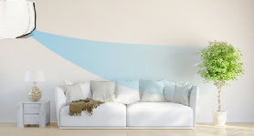
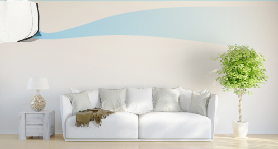
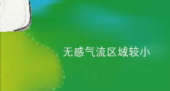
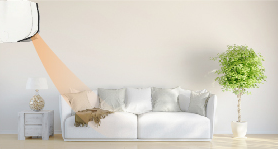
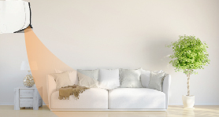

什么是康达效应?
康达效应(Coanda Effect)亦称附壁作用或柯恩达效应。流体(水流或气流)
离开本来的流动方向，改为随着凸出的物体表面流动的倾向。
为什么康达无法被模仿?
在航空航天领域，因为有了先进的“翅膀”，笨重的飞机才能够起飞并
且保持平衡不坠落，而“康达效应”是机翼的主要工作原理。大金
将其运用于空调气流的研发中，开发出大金的“康达效应气流”。
我们通过千万次的实验，完成风扇、热交、马达的全面改型，最终实现
了“不止于轻柔”的舒适气流。
我们通过千万次的实验，完成风扇、热交、马达的全面改型，最终实现 了“不止于轻柔”的舒适气流。
-
＋畅快 让气流纵情畅快
凉爽不等片刻
极速运转模式开启时，空调将以最大风速送风，使室温更快到达设定温度。通过保存设定，该功能可以在您每次打开 空调时自动启动。
让相聚更畅快
朋友造访时，一键就能补充所需温度。强力运转模式下，空调可提升14%的制冷性能或20%的制热性能，并在该模式运转20分钟后自动恢复原状态。*数据为FTXR272PC机型内部试验得出
-
＋安静 让气流回归平静
大直径贯流风扇
E-MAX 7采用直径更大的贯流风扇来提高风量，并采用精确的气流解析设计风扇，每一片叶片均拥有独特的角度，加之高精度的生产工艺，确保风扇形成大风量而安静的气流。
磁悬浮般的电机
通过Original Design Manufacturer直流电机，贯流风扇在磁场力的驱动下高速运转。这意味着最大程度的避免了机械摩擦，使室内机风扇可以像磁悬浮列车一样高速、平稳的运行。
-
＋健康 让气流呵护健康
打造健康睡眠
依据科学研究而设计的夜间睡眠模式，睡眠后空调温度缓慢降低以促进深度睡眠， 为您打造更优质、健康的睡眠。
“UP-钛”光催化过滤网
采用钛-磷灰石为材料，能去除被“UP-钛”光催化过滤网捕集到的微粒中带有的病毒或细菌，并吸附异味，长久保持高效除菌能力。
-
＋开阔 让气流释放空间!
大空间从容应对
得益于出色的气流，E-MAX 7不仅仅有强大的容量来满足大空间的需求。在客厅、餐厅这样开阔的空间，也可以实现均匀的气流分布。

康达效应气流制冷——远距离覆盖下沉，舒适无感
康达效应气流制冷时，送风更高更远，冷风不直吹人体，使冷空气均匀下沉，远离气流直吹
水平叶片以-5°固定，
冷风不直吹人体,送风更高更远，形成5m无感距离（以R236为例）
-
常见气流
无感距离2m,冷风直吹人体 -
康达效应气流
无感距离5m，冷风不直吹人体* 与常见空调制冷时送风示意比较
无感区域：大金试验室测得距空调出风口0.6m以下，风速不高于0.3m/s的区域
室内温度分布更均匀
-
常见气流
冷风不宜吹人体冷风不宜吹人体 -
康达效应气流
 无感气流区域大* 大金实验室实测温度分布情况
无感气流区域大* 大金实验室实测温度分布情况
康达气流制热——暖足同时温度更均匀
康达效应气流制热覆盖更广范围，达到更好暖足效果，同时，暖气流循环提升制热舒适度
叶片先以65°向下送风
暖气流直达地面覆盖更广范围，达到更好暖足效果
-
常见气流
暖风到达地面范围较小 -
康达效应气流
暖风到达地面范围较大
达到设定温度后，叶片向上送风至-5°，
利用康达气流，使室内暖气流有效循环，提高制热舒适度
-
常见气流向下送风
康达效应气流制热时，
水平叶先以65°向下送风，暖气流向下直达离地10cm的空间，令人从足部温暖起来 -
康达效应气流向上送风
 制热达到设定温度后
制热达到设定温度后
水平叶自动调节为-5°向上送风，有效均衡房间温度